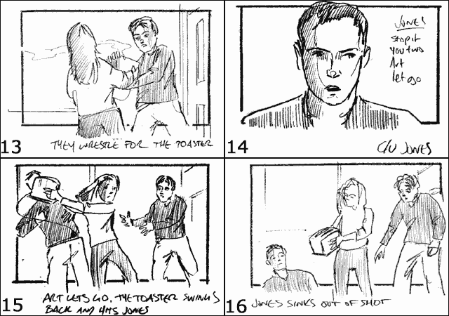
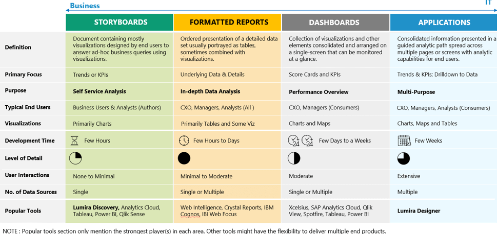

¿Qué son los storyboards?
Definiciones
En el anterior artículo comentaba una clasificación de las soluciones BI que hablaba de "Storyboards". Pero, ¿Qué son los storyboards? ¿En que se diferencian de los tradicionales dashboards?
El artículo de SAP aportaba esta definición:
Storyboard: Documento que contiene sobre todo visualizaciones diseñadas por los usuarios para responder preguntas de negocio ad-hoc utilizando visualizaciones.
El artículo, además, señalaba que el propósito de estos análisis era el autoservicio (self service analysis), que los construían los business users, que utilizaban sobre todo gráficos, y que se construían en pocas horas.

La palabra viene del mundo del cine, y se refiere a un conjunto de imágenes mostradas de manera secuencial que muestran el guion de la película o producción (como si fuera un comic). De esta manera, guionistas, actores o productores pueden previsualizar la obra sin la necesidad de grabar las secuencias (con le ahorro de costes que eso supone, obviamente).
Por lo tanto, en el contexto del análisis de datos, un storyboard sería una secuencia de pantallas que nos enseñan una "historia" de algún KPI o indicador. Por ejemplo, podría mostrarnos como el precio de nuestros productos afecta al beneficio en distintos periodos o regiones. Empezando desde una visión global, el dashboard debería permitirnos profundizar por algunas de las dimensiones disponibles (tiempo y geofrafía, por ejemplo).
Por su concepción, un "storyboard" seria una técnica de prototipaje. Para ser útil, esta historia debería ser muy fácil/rápida de construir, dejando para una fase posterior el análisis detallado o la toma de decisiones.
No existe ninguna definición "oficial" de lo que es stroyboarding, ni existe un consenso al respecto. En general, por lo que he visto, la gente lo usa en el sentido que arriba he explicado. En mi opinión, técnicamente no se diferencia demasiado de un "dashboard", y la única diferencia estaría en el objetivo del análisis (inmediatez, prototipo, ...).
Por lo tanto, las características que pediría a una herramienta de storyboarding serían:
- Facilidad de uso
- Potente capa semántica (imprescindible para alcanzar la facilidad de uso)
- Variedad de tipos de visualización (gráficos y tablas). (¿Por qué la clasificación de SAP prioriza los gráficos frente a la representación tabular?)
- Que requiera poco esfuerzo de "formateo". Que el formato predeterminado sea aceptable. (la apariencia es importante, pero no es ahí donde el analisita debe centrar sus esfuerzos).
Por supuesto, considero que Crono cumple holgadamente estos requisitos. De hecho, muchas veces hemos escuchado que Crono es una herramienta fenomenal para hacer prototipos y descubrir la relaciones relevantes entre los datos. Al construir un dashboard muchas veces lo más difícil es seleccionar los gráficos o indicadores a representar. ¿Qué indicadores son verdaderamente relevantes? ¿Es mejor mostrar los datos por semanas o por meses? ¿Lo agrupo por familia o por subfamilia? Todas estas preguntas no son evidentes cuando te piden construir un "dashboard de ventas", y es necesario bucear en los datos para descubrir esas relaciones relevantes, significativas y útiles para el usuario. Con Crono todas esas preguntan se responden de un modo trivial, una vez construida la capa semántica.